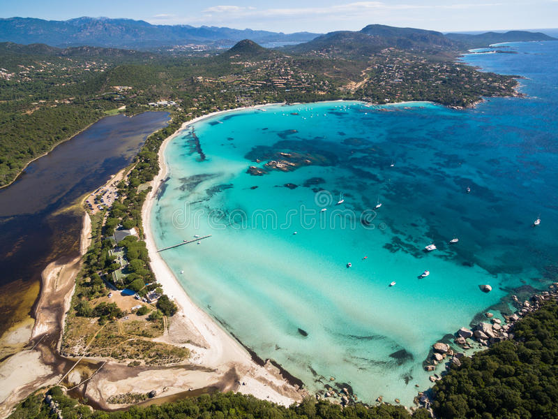

Localizada em Porto Vecchio no sul da Córsega, a praia de Santa Giulia é uma das mais belas praias da França.
Em uma baía em formato de ferradura com areia branca e água azul-turquesa, alem de ser ideal para crianças, a praia também é um ótimo lugar para velejar e praticar esportes aquaticos.
